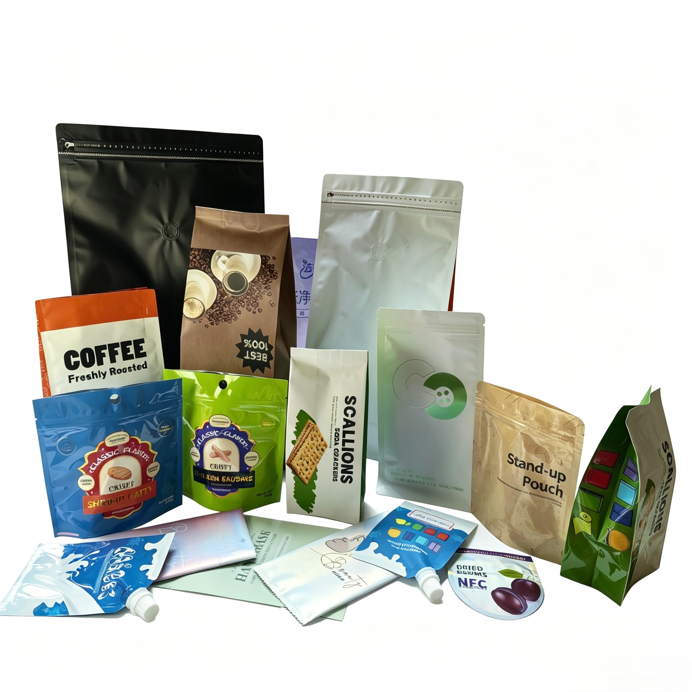

Mastering Stand-Up Pouch Structural Design: A Comprehensive Guide for Food Brands

In the competitive food and beverage landscape, packaging serves a dual purpose: it acts as a silent salesperson on retail shelves and functions as an engineered protective barrier. Among flexible packaging formats, the Stand-Up Pouch (Doypack) has emerged as the global benchmark for retail success, replacing rigid containers across coffee, snacks, pet food, and specialty foods.
However, designing an exceptional stand-up pouch requires far more than compelling visual graphics. The structural integrity, bottom gusset geometry, film layer mechanical properties, and closure engineering determine whether a pouch stands firmly upright or collapses on the shelf. This guide breaks down the essential technical elements of stand-up pouch structural design.
1. Bottom Gusset Design: The Foundation of Shelf Stability
The bottom gusset is the core engineering component that enables flexible packaging to stand vertically. Choosing the correct gusset structure depends directly on product weight, physical state (liquid vs. dry powder vs. bulky solids), and intended shelf presence:
🔴 Round Bottom Gusset (Classic Doypack)
- Mechanism: Formed by folding the bottom film in a continuous W-shape, sealed along the sides and curved bottom corners.
- Best Applications: Light to medium weight products (50g to 500g), such as specialty coffee, organic snacks, and dried fruits.
- Structural Advantage: Excellent base weight distribution for lighter packages, providing a balanced, upright posture.
🔴 K-Seal Bottom Gusset
- Mechanism: Characterized by 30-degree angle heat seals on both bottom corners, forming a "K" shape that channels product load outward.
- Best Applications: Heavier bulk goods (1kg to 5kg), including pet food, protein powders, and bulk grains.
- Structural Advantage: Reduces stress on vertical side seals and prevents corner pouch distortion under high product loads.
🔴 Plow Bottom (Pinch/Folded Bottom) Gusset
- Mechanism: Constructed from a continuous roll of film where the bottom is folded inward without a bottom seal.
- Best Applications: High-volume automated filling of granulates, nuts, and fine powders.
- Structural Advantage: Maximizes internal volumetric efficiency while eliminating bottom seal leaks completely.
2. Multi-Layer Laminate Engineering: Tailoring Barrier Performance
A stand-up pouch's physical strength and barrier performance depend on selecting the optimal combination of substrate layers:
- Outer Layer (Print & Thermal Resistance): PET (Polyethylene Terephthalate) or Matte OPP provides excellent tensile strength, clarity, and temperature resistance during heat sealing.
- Middle Layer (High-Barrier Core): VMPET (Metallized PET), AL (Aluminum Foil), or EVOH provides protection against oxygen (OTR < 0.5 cc/m²/day) and moisture (WVTR < 0.5 g/m²/day) to extend product shelf life.
- Inner Layer (Sealability & Food Contact): LLDPE (Linear Low-Density Polyethylene) or CPP provides low-temperature heat-seal integrity, puncture resistance, and safe food contact.
3. Functional Features & User Experience
Structural optimization must also focus on consumer convenience and functional re-sealability:
- Press-to-Close & Pocket Zippers: Protect freshness after opening. Pocket zippers allow easy filling through the top header before sealing.
- One-Way Degassing Valves: Essential for specialty coffee packaging, allowing CO2 released by freshly roasted beans to escape without letting oxygen enter.
- Laser Scoring & Tear Notches: Clean, tool-free opening without tearing the body structure or damaging the zipper mechanism.
- Ergonomic Handles & Pour Spouts: Ideal for heavy-duty pouches or liquid products, ensuring smooth dispensing and easy handling.
4. Sustainable Structural Design: Transitioning to Mono-Materials
With global regulations like the EU PPWR taking full effect, traditional multi-material laminates (e.g., PET/AL/PE) are transitioning toward fully recyclable mono-material structures:
- Mono-PE Structures (MDO-PE / PE): Engineered using Machine Direction Oriented PE combined with high-barrier PE, offering full 100% recyclability in PE recovery streams.
- PP-Based Laminates (BOPP / CPP): High-rigidity solutions ideal for products requiring high-temperature processing or retort applications.
Conclusion
Engineered stand-up pouch design seamlessly connects structural integrity with brand aesthetics and environmental compliance. Selecting the proper bottom gusset, barrier laminate, and functional closure ensures product safety throughout the entire supply chain.
At Guangdong Shenying Packing, our technical team combines BRC-certified manufacturing standards with advanced digital and gravure printing technologies to engineer customized stand-up pouches for global food brands.
Need custom Stand-Up Pouch structural engineering or sample prototyping?
Our technical team can help you select the ideal bottom gusset, barrier film, and eco-friendly material for your products.
📧 Email: may.lee@shenyingpacking.com
💬 WhatsApp: +86 13424643780